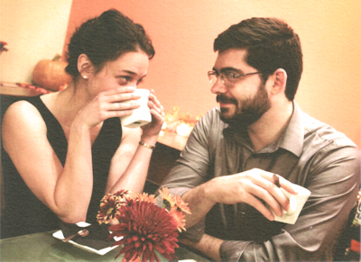
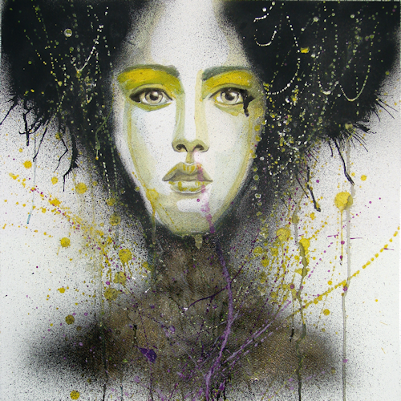

 Welcome to the Cauli-Wood Gallery! Our mission is to support Sedona's vibrant graphic arts community. Enjoy fine art at our friendly café where the coffee and tea are always hot, the jazz is cool, and the scones are uniformly delicious.
All of the coffee served in our café is fair trade organic. We also offer specialty coffee drinks, teas, and wines. Sample our delicious sandwiches, wraps, and soups as you peruse the gallery. Free and secure Wi-Fi is available on the premises to our loyal patrons.
Consider the Cauli-Wood Gallery for your next gathering. We cater receptions, corporate meetings, wedding receptions, and more with ample space for up to 120 guests.
ARTISTS: We're always on the lookout for fresh and exciting talent and would love to consider your work. Please contact us to arrange a viewing and appraisal of your portfolio.
Spotlight
Long a fixture of the Sedona art community, we are proud this month to feature a retrospective of Aza Deere's work in Visions of Light & Shadow. Aza became a year-round artist-in-residence starting back in 1962, when she arrived with "a few dollars in one pocket and few more brushes in the other pocket." Since then, she has gone through many brushes and added a few more dollars. Aza's work is known for its sensuous and ethereal quality, delicately mixing light and shadow in surprising and memorable ways. Please join Aza on April 7 for a reception celebrating her life and art.